Булевы операции
CSG геометрия операется на булевы операции. В zencad представлены операции объединения, вычитания и пересечения 3д объектов. В zencad есть два способа выполнения этих операций:
- над массивами тел с помощью функций
union,difference,intersect - над парами тел с помощью операторов
+-^
Union
#with operators:
sphere(r=10) + cylinder(r=5, h=10, center=True) + cylinder(r=5, h=10, center=True).rotateX(deg(90))
#with function:
union([
sphere(r=10),
cylinder(r=5, h=10, center=True),
cylinder(r=5, h=10, center=True).rotateX(deg(90))
])
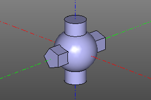
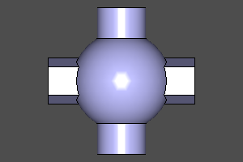
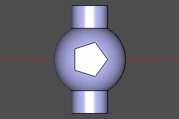
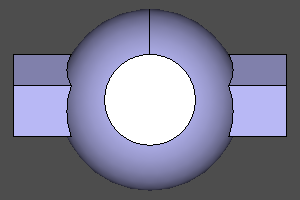
Difference
#with operators:
sphere(r=10) - cylinder(r=5, h=10, center=True) - cylinder(r=5, h=10, center=True).rotateX(deg(90))
#with function:
difference([
sphere(r=10),
cylinder(r=5, h=10, center=True),
cylinder(r=5, h=10, center=True).rotateX(deg(90))
])
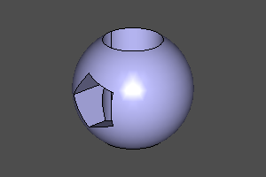
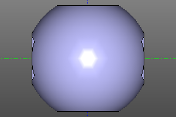
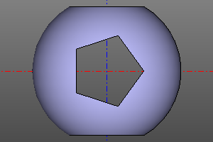
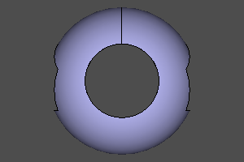
Intersect
#with operators:
sphere(r=10) ^ cylinder(r=5, h=10, center=True) ^ cylinder(r=5, h=10, center=True).rotateX(deg(90))
#with function:
intersect([
sphere(r=10),
cylinder(r=5, h=10, center=True),
cylinder(r=5, h=10, center=True).rotateX(deg(90))
])
 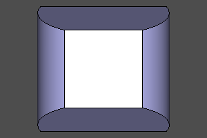
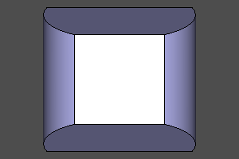
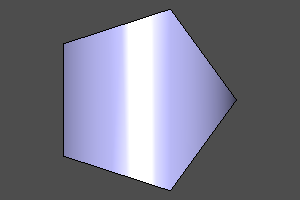
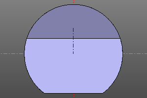
Example
#!/usr/bin/env python3
#coding: utf-8
from zencad import *
lazy.diag = True
c1 = 100
c2 = 130
c3 = c2/2 + 20
base = box(c1,c1,c1,center=True)
f1 = ngon(r = 35, n = 3)
f2 = ngon(r = 35, n = 5)
f3 = circle(35)
s1 = linear_extrude(f1, c2, center=True)
s2 = linear_extrude(f2, c2, center=True).rotateY(deg(90))
s3 = linear_extrude(f3, c2, center=True).rotateX(deg(90))
m1 = base - s1 - s2 - s3
m2 = base ^ s1 ^ s2 ^ s3
m3 = s1 + s2 + s3
ystep = 240
xstep = 240
fontpath = os.path.join(zencad.moduledir, "examples/fonts/testfont.ttf")
t1 = textshape("difference", fontpath, 40)
t1c = t1.center()
t1=t1.translate(-t1c.x, -t1c.y, 0).rotateZ(deg(45))
t2 = textshape("intersect", fontpath, 40)
t2c = t2.center()
t2=t2.translate(-t2c.x, -t2c.y, 0).rotateZ(deg(45))
t3 = textshape("union", fontpath, 40)
t3c = t3.center()
t3=t3.translate(-t3c.x, -t3c.y, 0).rotateZ(deg(45))
display(base.forw(ystep))
display(s1)
display(s2.left(xstep))
display(s3.right(xstep))
display(m1.back(ystep))
display(m2.left(xstep).back(ystep))
display(m3.right(xstep).back(ystep))
display(t1.back(ystep).up(c3), Color(1,1,0))
display(t2.left(xstep).back(ystep).up(c3), Color(1,1,0))
display(t3.right(xstep).back(ystep).up(c3), Color(1,1,0))
disp(s1.left(xstep).back(ystep), Color(0.5,0,0,0.95))
disp(s2.left(xstep).back(ystep), Color(0.5,0,0,0.95))
disp(s3.left(xstep).back(ystep), Color(0.5,0,0,0.95))
disp(s1.back(ystep), Color(0.5,0,0,0.95))
disp(s2.back(ystep), Color(0.5,0,0,0.95))
disp(s3.back(ystep), Color(0.5,0,0,0.95))
show()